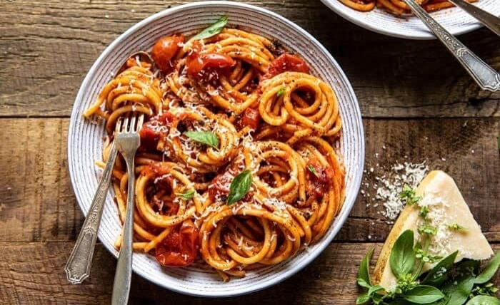
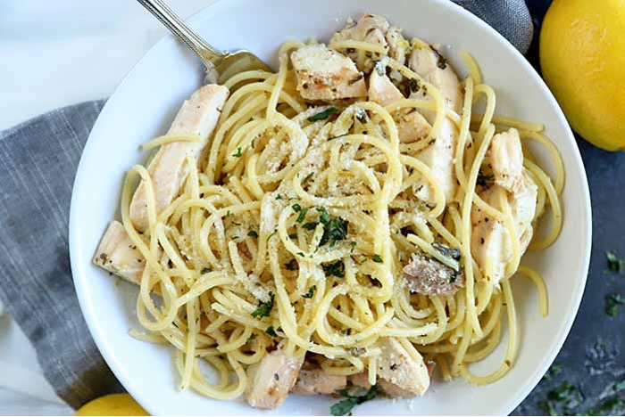
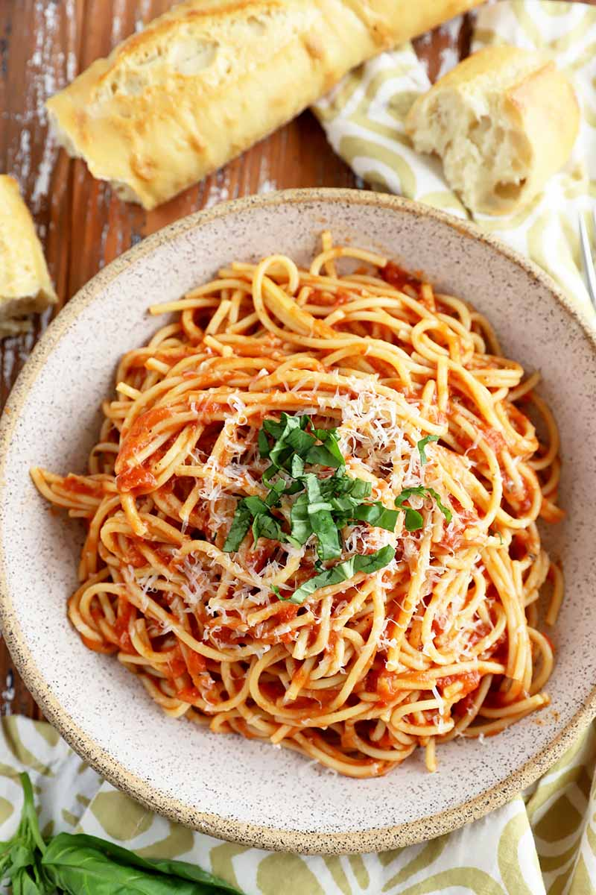

Different Types of Pastas
Penne, Farfalle, Rigatoni, Cavatappi
Penne: A two-inch long, tube-shaped pasta that is cut diagonally at both ends. Great with chunky meat or vegetable sauces, as bits of the meat or veggies will slide into the pasta tubes.
Farfalle: Use farfalle pasta to dress up any dish that calls for small pasta shapes, such as penne or shells. Also known as bow-tie pasta.
Rigatoni: Short, grooved, tube-shaped "riggies" can be used in pretty much any setting, from sauces to salads to baked casseroles.
Linguini:These long, flat noodles are slightly thicker than spaghetti. The classic Italian restaurant pairing is clam sauce, but you can use this pasta in any dish that calls for spaghetti.